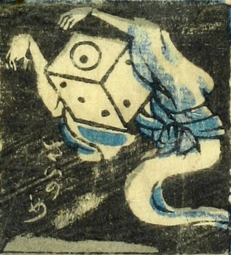

サイコロ；サイコロ，一つ目；ヒトツメ

賽の目。頭部がサイコロの化物。一の目が目玉のようになっている。着物をまとい、両腕をあげて手を垂らした姿で浮んでいる。足はないようである。
著作者：芳盛／出典：親書誌：U426_nichibunken_0073：しん板化物尽し；シンパンバケモノヅクシ／日付：2006／資源識別子：U426_nichibunken_0073_0029_0000
Copyright (c)2010- International Research Center for Japanese Studies, Kyoto, Japan. All rights reserved.